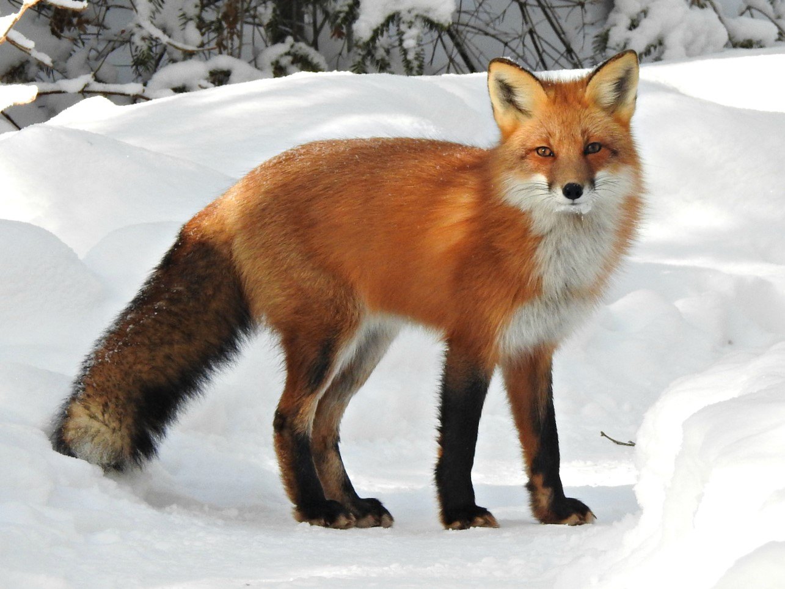
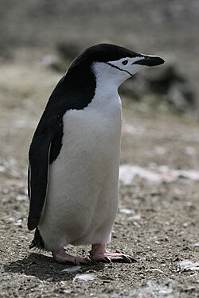
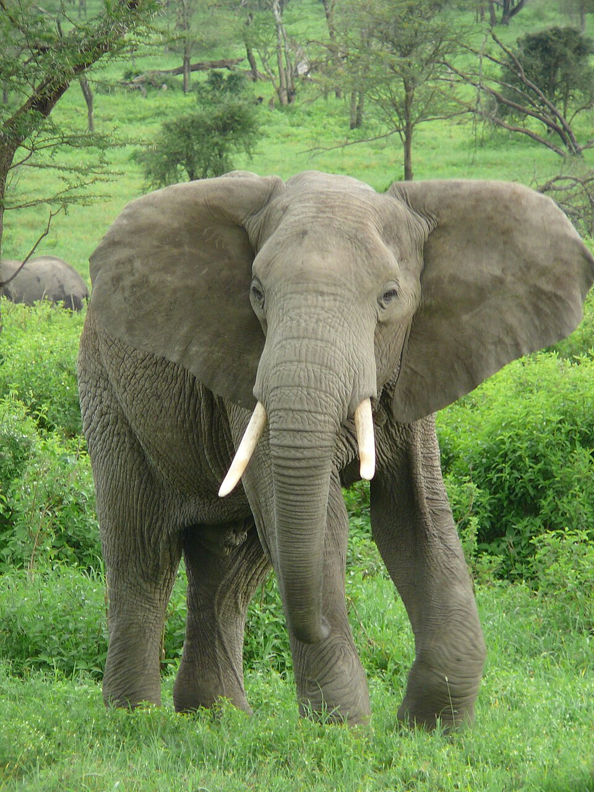
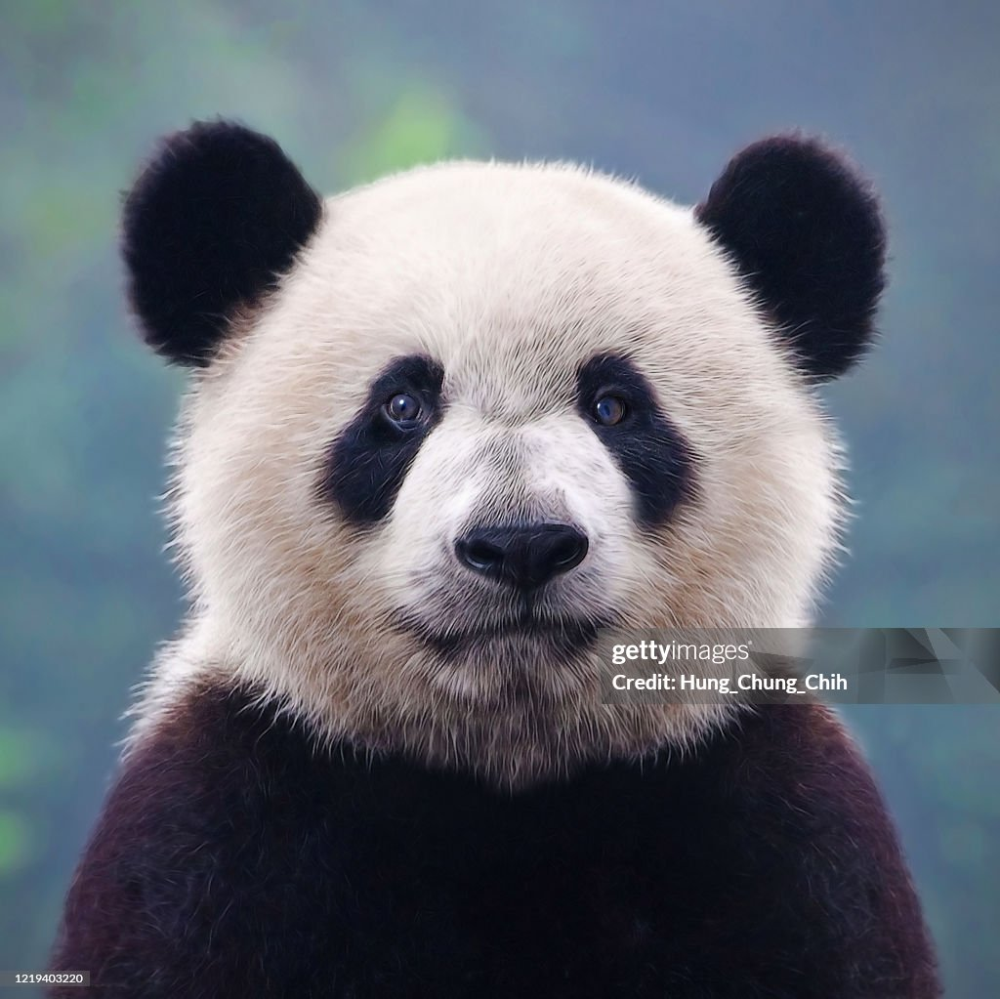
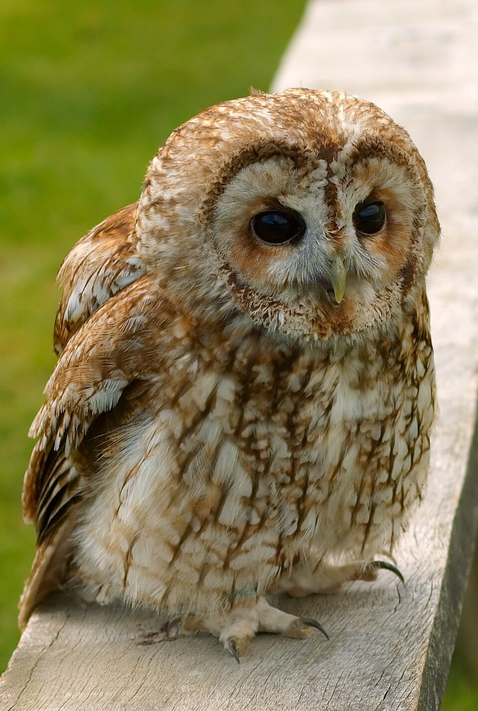
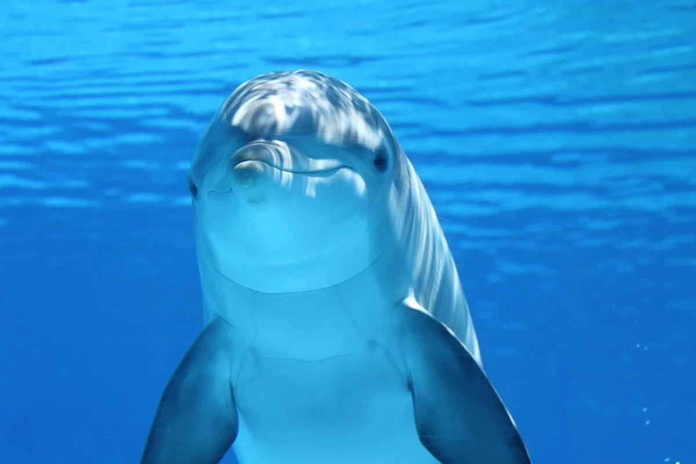

Vitaj na mojej stránke o zvieratách. Nájdeš tu šesť zaujímavých zvierat a niekoľko zaujímavostí z ich života.

Líška je šelma s hustým chvostom. Žije v lesoch a loví malé zvieratá.

Tučniak je vták, ktorý nevie lietať. Výborne však pláva a potápa sa.

Slon je najväčšie suchozemské zviera. Má veľké uši a dlhý chobot.

Panda je medveď s čierno-bielou srsťou. Jej obľúbenou potravou je bambus.

Sova je nočný vták. Má výborný sluch a dokáže lietať veľmi potichu.

Delfín je inteligentný morský cicavec. Dorozumieva sa rôznymi zvukmi.